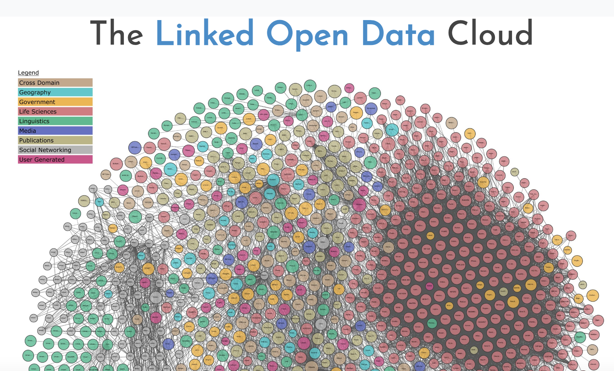

flowchart LR
Z[Author name] --> A[Search VIAF]
A --> |No| C[Search Wikidata]
A --> |Yes| B[Add Authority]
C --> |Yes|B
C --> |No|D[Alternate name?]
D --> |Yes|A
C --> |No| E
D --> |No| E[Add to Unknown Authors]
Data gathering for the GCSFI project
2026-10-21

The Linked Open Data Cloud
View the interactive LOD cloud here
For a dataset to be interoperable, it has to have points of agreement with other datasets: pre-defined categories that have meaning outside of that dataset’s context.
Not only does this help validate the data by using clear and established definitions it also helps users combine data from multiple sources.
Library of Congress Subject Headings
Disambiguate location names that are similar by providing geographic areas and regions
flowchart LR
Z[Author name] --> A[Search VIAF]
A --> |No| C[Search Wikidata]
A --> |Yes| B[Add Authority]
C --> |Yes|B
C --> |No|D[Alternate name?]
D --> |Yes|A
C --> |No| E
D --> |No| E[Add to Unknown Authors]
“A collaboratively edited multilingual knowledge graph hosted by the Wikimedia Foundation.” (“Wikidata”, Wikipedia.org).
Like Wikipedia, it’s user generated and controlled: that means we can share back what we have discovered or add references for various statements in existing entries.
What questions do you have?